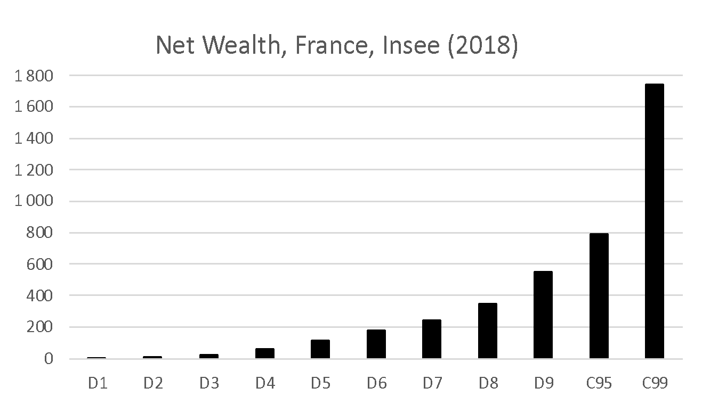

Macroéconomie
Demande Agrégée
Pablo Winant
Introduction
Plan
- la semaine dernière
- PIB potentiel, fluctuations
- Consommation:
- optimisation des consommateurs (fondamental)
- agents keynesiens (qui ne peut pas s'endetter)
- agents ricardiens (qui peuvent lisser leur consommation)
- Relation fondamentale: $$Y = C + I + G + NX$$
- cette semaine
- Intro au modèle AS/AD
- Les autres composantes de la demande agrégée
Regardons les cycles depuis 20 ans (1)

- 1990-2021: deux grands événement: la grande récession et la crise du covid
- quel choc a pu les causer?
Le modèle classique
- une baisse de la production peut résulter
- d'une baisse de la demande (avec une baisse des prix)
- d'une baisse de la production (avec une hausse des prix)
- à l'inverse, une hausse des prix peut résulter
- d'une réduction de la production
- d'une hausse de la demande
- suggestion simple du modèle classique: regardons les prix (ou l'inflation) pour identifier les chocs
Regardons les cycles depuis 20 ans (2)
Le Modèle AS/AD
\begin{center} {width=60%}
{width=60%}
\end{center}Ce n'est pas le même modèle !
Probleme 1:
- Pourquoi la courbe de demande est-elle décroissante?
- Les Keynésiens: lorsque les agents deviennent plus riches (ou les
prix réels plus bas), ils consomment plus, ce qui augmente la production
- remarquez bien la différence avec une courbe de demande normale
- Les Néo-keynésiens
- essayer de formaliser (=microfonder) le comportement des agents pour calculer la demande agrégée (-> session 2)
- obtenir un modèle sans irrationnalité, donc robuste à la critique de Lucas
- L'existence de la courbe AD n'est pas controversée dans la
profession
- Mais il y a un gros débat sur sa pente
Probleme 2: l'offre agrégée
{width=45%}
\begin{overprint}\onslide<1>
- A l'inverse, il n'est pas évident que la courbe d'offre soit croissante avec une pente finie
- A long terme, quand tous les marchés sont à l'équilibre, elle
devrait être verticale. Changer la demande n'aurait alors aucun effet
- Le point de vue des monétaristes (Friedman)
- Et à court terme? La courbe pourrait être horizontale, croissante, verticale...
\onslide<2>
- La pente de la courbe (OA) est cruciale pour l'efficacité des
politiques de demande.
- sur le graphe, la politique de demande est plus importante pour AS1 que pour AS2 ou LRAS
- Classique: les prix sont flexible, la courbe d'offre est verticale
- Keynésiens (ISLM): les prix sont absolument rigides, la courbe d'offre est horizontale
- Néo-keynésiens: la courbe d'offre est croissante à cause d'une friction ou d'une inefficacité (voir amphi 3)
\end{overprint}Aperću: notre modèle de base
- Demande agrégée (version IS-MP)
- IS: $y_t=\theta_t - \sigma (r_t-r)$
- MP: $r_t = \overline{r} + \gamma (\pi_t - \overline{\pi})$ $$AD: y_t = \theta_t - \sigma \gamma (\pi_t - \pi)$$
- Offre agrégé: $$AS: \pi_t=\pi_{t-1}+\kappa (y_t - y^n_t)$$
- Votre but: comprendre d'où viennent ces équations, et comment les utiliser
- Les variables:
- minuscules, log-deviations par rapport à l'état stationnaire
- lettres grecques: paramètres positifs
- $r_t$: taux d'intérêt réel ($r_t = i_t -\pi_{t+1}$)
- deux type de chocs:
- $\theta_n$ demande
- $y_t^n$ offre (choc sur PIB potentiel)
Aperću: notre modèle de base
$$AS: \pi_t=\pi_{t-1}+\kappa (y_t - y^n_t)$$ $$AD: y_t = \theta_t - \sigma \gamma (\pi_t - \overline{\pi})$$
- Remarques sur notre modèle:
- il est intertemporel: variables en $t-1$ et en $t$.
- Il unifie le court terme et le moyen terme. On peut simuler le retour à l'équilibre
- A la date $t$, l'inflation passée est prédeterminée
- On peut donc représenter OA/AD dans le plan ($y_t, \pi_t$).
Remarque: etant donné $\pi_{t-1}$ les plans $(y_t,p_t)$ et $(\pi_{t},y_t)$ sont equivalents.
La demande agrégée - la courbe IS
Les composants de la demande agregee
Rappel: $$Y = C + I + G + NX$$
- Ce n'est pas un modèle, c'est une relation comptable.
Donc $C + I + G + NX$ est la demande agregee?
- NON!
On va montrer que les composants de la demande agrégée, $C,I,G,NX$ dépendent du
- revenu $Y$ (+)
- taux d'intéret réel $r$ (-)
La courbe IS
- En macroéconomie la demande est caractérisée par l'équation $$Y = C(Y,r) + I( r ) + G + NX( r )$$ qui lie implicitement production et taux d'intérêt réel.
- Cette relation s'appelle la courbe IS (pour Investment-Saving) parce qu'elle provient d'un arbitrage intertemporal (au travers du taux d'intérêt réel)
- Elle correspond à l'équilibre sur le marché des biens et services, qui serait déterminé uniquement par les dépenses prévues, avec une production parfaitement élastique.
- Cas spéciaux:
- $G$ est décidé de manière autonome par le gouvernement
- Dans ce cours on prend NX comme exogène.
La consommation
Consommateurs (1)
- Étant données ses préférences, un consommateur prend ses décisions
de consommation en fonction de:
- son revenu aujourd'hui $Y_t$)
- son revenu futur (plus précisément le revenu qu'il anticipe)
- Etant donné le revenu, la décision de consommer est un arbitrage entre la consommation aujourd'hui et la consommation future.
- Cet arbitrage dépend du taux d'intérêt réel $r$ (le prix de la consommation aujourd'hui).
- On peut modéliser cet arbitrage en supposant que les agents sont rationnels mais ont une préférence pour le présent ($C_t$ consommation, $N_t$ travail): $$\max_{C_0, C_1, C_2 ...} E_0 \left[ \beta^t U(C_t) \right] \text{ou}\max_{C_0, C_1, C_2 ...} E_0 \left[ \beta^t U(C_t, N_t) \right]$$
Les deux grands types de consommateurs (rappel)
- Agents keynésiens
- leur consommation est limité par une contrainte d' endettement
- par ex $C^K(Y^K_t) = c^K_0 + c^K_1 Y^K_t$
- propension marginale à consommer $c_1$ proche de 1.
- Agents ricardiens
- il peuvent lisser leur consommation dans le temps
- consomment une (petite) partie de leur revenu permanent ($0<\xi\approx 0$): $$\begin{aligned} C^R(Y^R_t) & = & \zeta \left(Y_t + \frac{1}{(1+r)}Y_{t+1} (...)\right)\ C^R(Y^R_t) & \approx & c^R_0 - c^R_1 r_t \end{aligned}$$
- répondent peu aux choc temporaires de revenu
- réagissent au taux d'interêt
Agrégation
- Supposons qu'on ait
- une part $\lambda$ d'agents keynésiens $$C^K(Y^K_t) = c^K_0 + c^K_1 Y^K_t$$
- une part $(1-\lambda)$ d'agents ricardiens: $$C^R(Y^R_t) = c^R_0 - c^R_1 r_t$$
- Peut-on facilement agréger les consommations pour obtenir $$C(Y) =
c_0 + c_1 Y + c_2 r_t ?$$
- oui mais il faut connaître comment se distribue le revenu $Y_t$ entre les deux types d'agents
- par exemple si $\frac{Y^K_t}{\lambda} = \frac{Y^R_t}{1-\lambda}$ (pas d'inégalité) alors $c_1 = \lambda c_1^K + (1-\lambda)c_1^R$
- Intuitivement: plus la part $\lambda$ de ménages keynésiens, plus la mpc agrégée est élevée (*)
- Au fait, quelle est la proportion d'agents keynésiens?
Propension marginale à consommer et distribution des revenus
Japelli and Pistaferri, politique fiscale et hétérogénéité des propensions marginales à consommer (2017)
 { width=45% }
{ width=45% }  { width=45% }
{ width=45% }
Discussion
- D'après le premier graphe, il y a trois grandes catégories de MPC,
pas deux
- Elevée
- Faible
- Intermédiaire: qui est dans cette catégorie?
- Le deuxième graphe suggère que le revenu disponible est un bon prédicteur de la MPC
- Revenu disponible: revenu restant après paiement des dépenses contrainte
Pourquoi les agents sont-ils contraints?
D'après Piketty (2018)
{ width=45% }  { width=45% }
{ width=45% }
Discussion (2)
- Les agents au milieu de la distribution on une part plus importante de richesse illiquide
- En conséquence:
- Leur revenu disponible (utilisable pour acheter immédiatement) est plus faible car une part importante de leur revenu est alloué au remboursement de leur prêt
- Ils on un PMC plus élevé
- Et réagissent aux changement dans le taux d'intérêt (surtout s'il est flottant)
- Dans un papier très influent, Monetary Policy According to HANK, 2018, Kaplan, Moll et Violante, souligne le role des “wealthy hand to mouth” et leur influence sur les politiques monétaires.
L'investissement
Les firmes
- Pour comprendre la réaction des firmes aux taux d'intérêt, il suffit de comprendre le comportement d'une firme: $$I(r) = \int_i I_i(r)$$
- Pourquoi l'investissement d'une firme dépend-t-il négativement de $r$ ?
- Intuition ?
La production des firmes (1)
Une firme $i$ produit avec du capital physique et du travail: $Y_i = f(K_i, N_i)$
- Elle loue le travail au prix $W$
- Elle achète du capital au prix $R^K$
- elle est donc du côté de la demande sur le marchés des bien et des services
- il s'agit de biens d'investissements (machines, ordinateurs, batiments, infrastructures...)
- pour simplifier on peut supposer que 100% du capital se déprécie à chaque période de sorte que $I_i=K_i$
- On supppose que la fonction de production d'une firme est monotone
et concave
- $f^{\prime}{K}>0$ , $f^{\prime}{L}>0$, $f^{\prime\prime}{KK}<0$, $f^{\prime\prime}{LL}<0$
- On dit qu'elle a des rendements décroissants en chaque facteur:
Le programme des firmes
- Combien de capital une firme veut-elle acheter ?
- Notons $P_i$ le prix d'une unité de production de la firme $i$.
- Son profit est: $$\Pi_i = P_i f(K_i, N_i) - W N_i - R^K K_i$$
- Supposons pour simplifier qu'elle est en compétition parfaite:
- preneuse de prix pour $P_i$
- Sur le marché des facteurs elle est acheteuse aux prix $W$ et $R^K$
- Son problème est alors: $$\max_{K_i, N_i} \Pi_i = P_i f(K_i, N_i) - W N_i - R^K K_i$$
Le programme des firmes (solution optimale)
La solution du problème: $$\max_{K_i, N_i} \Pi_i = P_i f(K_i, N_i) - W N_i - R^K K_i$$ donne: $$W = P_i f^{\prime}_N (K_i,N_i)$$ $$R^K = P_i f^{\prime}_K (K_i,N_i)$$
La firme ajuste sa demande de facteurs de façon à ce qu'ils soient remunérés à leur productivité marginale.
Rendement du capital et rémunéraiton de l'épargne
Une firme typique doit emprunter les fonds pour acheter du capital.
Si elle emprunte la totalité: $B_r = K_i$ et doit rembourser au taux d'intérêt du marché $(1+r)$.
La solution du problème: $$\max_{K_i, L_i | K_i = B_i} \Pi_i = P_i f(K_i, L_i) - W L_i - (1+r) B_i $$ donne: $$W = P_i f^{\prime}_L (K_i,L_i)$$ $$(1+r) = P_i f^{\prime}_K (K_i,L_i)=(R^K)$$
Même formule: le rendement financier est égal au rendement du capital. Cas particulier du principe d'arbitrage.
Demande de capital des firmes
- On a donc: $$(1+r) = P_i f^{\prime}_K (K_i,L_i)$$
- Comme $F(.,L_i)$ est croissante et convexe, on peut obtenir la demande d'investissement $I(r; L_i)$
- On peut différencier l'équation pour obtenir: $$\Delta r = P_i f^{\prime\prime}_K(K_i; L_i) \Delta K$$ Ou $$\Delta K_i = 1/(P_i f^{\prime\prime}_K(K_i; L_i) ) \Delta r$$
- Une augmentation du taux d'intérêt baisse la demande d'investissement
- Intuition?
- si le taux d'intérêt du marché est plus élevé, les investissement productifs sont comparativement moins rentables
- Remarque: le raisonnement est valide que la firme investisse ses propre fonds ou bien emprunte
Est-ce que les firmes réagissent au taux d'intérêt?
Est-ce que les firmes réagissent au taux d'intérêt?
- Dans les dernières années le canal de l'investissement ne semble pas
avoir soutenu la demande
- Lors des deux dernières crises, les taux d'interêt étaient très bas. Et l'investissement aussi.
- Il y a d'autre facteurs.
- L'incertitude sur la conjoncture économique
- Les firmes sont averses au risque. Quand la valeur future de leur production est inconnue elle produisent moins.
- Même si les taux directeurs sont très bas, les conditions de
financements peuvent être mauvaises
- Les banques aussi sont averses au risque
Les producteurs
- En réalité le problème des firmes est plus compliqué qu'une simple maximisation de profit
- Les firmes possèdent du capital et n'ont pas nécessairement besoin
d'emprunter.
- Elle peuvent emprunter à plus long terme sans devoir repayer leur prêt immédiatement après la production
- Certaines firmes ont des contraintes de crédit
- Dans ce cas leur capacité à emprunter dépend de leur capital existant qu'elle peuvent utiliser comme garantie ("collateral")
Courbe IS
Courbe IS:
- On a donné une justification pour les différentes composantes du PIB $$C(Y,r) + I( r) + G + NX$$
- A l'équilibre on doit avoir $$\overline{Y} = \overline{C} + \overline{I} + \overline{G} + \overline{NX}$$
- Après diférenciation: $$\Delta Y = C_Y \Delta Y + C_r \Delta r + I_r \Delta r + \Delta S$$ avec $\Delta S = \Delta G + \Delta NX$ qui représente un choc sur la demande.
Courbe IS: Log-linearisation
$$\Delta Y = C_Y \Delta Y + C_r \Delta r + I_r \Delta r + \Delta S$$
- On peut aussi log-linéariser pour obtenir: $$\frac{\Delta Y}{Y} = C_Y \frac{\Delta Y}{Y} + \frac{C_r}{Y}\Delta r + \frac{I_r}{Y}\Delta r + \frac{1}{Y}\Delta S$$
- En notant $y=\frac{\Delta Y}{Y}$ on obtient: $$y = -\sigma (r-r^{\star}) + \theta$$ avec $\sigma= \frac{-\left(\frac{C_r}{Y}+\frac{I_r}{Y}\right)}{1-C_y}>0$ et où $\theta = \frac{\Delta G + \Delta NX}{Y}$ contient toutes les sources variations qui ne proviennent pas du revenu ou du taux d'intérêt.
Courbe IS: résumé
Avec ce travail, on obtient une courbe IS (log-)linéaire (on a omis jusqu'à présent les indices $t$ mais l'équation vaut à toutes les dates.)
$$y_t = -\sigma (r_t-r^{\star}) + \theta_t$$
Où $\sigma= \frac{-\left(\frac{C_r}{Y}+\frac{I_r}{Y}\right)}{1-C_y}>0$ est la demi-élasticité de la demande au taux d'intérêt et où $\theta_t$ est un choc de demande.
- Une propension marginale à consommer $C_y$ plus grande implique une
élasticité plus grande de la demande aux chocs de revenus.
- pour les ménages keynésiens
- Une élasticité plus grande de la demande prévue aux taux d'intérêt
implique une réponse plus forte de la demande aux chocs de politique
monétaire
- pour les ménages ricardiens et les firmes
Politique Monétaire et Demande Agrégée
Le mandat de la banque centrale
- L'objectif principal de la banque centrale consiste à stabiliser l'inflation autour de son objectif $\pi^{\star}$
- Elle atteint cet objectif en influençant la demande en réponse au fluctuations du cycle économique
- La demande est affectée par le taux d'intérêt réel
- La banque centrale peut fixer le taux d'intérêt nominal
$i_t$, mais est vraiment intéressée par le taux d'intérêt réel
$r_t$
- les deux sont liés par la relation de Fisher: $r_t = i_t - \pi_{t+1}$
- pour simplifier on suppose ici qu'elle fixe directement le taux $r_t$
- voir amphi 4
- En suivant Romer 2002, on suppose simplement: $r_t = r^{\prime} + \kappa (\pi_t- \pi^{\star})$
- Typiquement, la banque centrale augmente le taux d'intérêt pour réduire l'inflation donc: $\kappa>0$
La courbe de demande agrégée
Maintenant que l'on a la courbe IS: $$y_t = -\sigma (r_t - r^{\prime}) = \theta_t$$
Et la réponse de la banque centrale (MP) $$r_t = r^{\prime} + \kappa (\pi_t - \pi^{\star})$$
On peut substituer le taux d'intérêt réel pour obtenir l'equation de demande agrégée (aussi appelée IS-MP): $$y_t = -\sigma \kappa (\pi_t - \pi^{\star}) + \theta_t$$
Cette courbe repressente l'équilibre sur le marche des biens et services, en prenant en compte la réponse de la banque centrale.
On a bien la demande agrégée comme une fonction décroissante de l'inflation (donc aussi des prix)
Comment identifier chocs d'offre et de demande ?